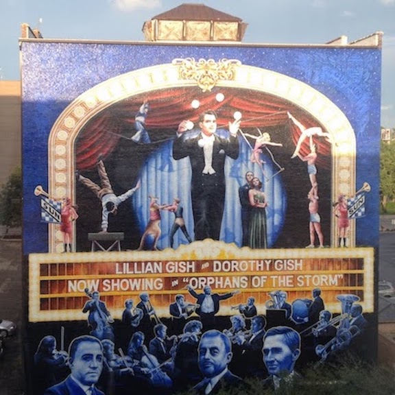
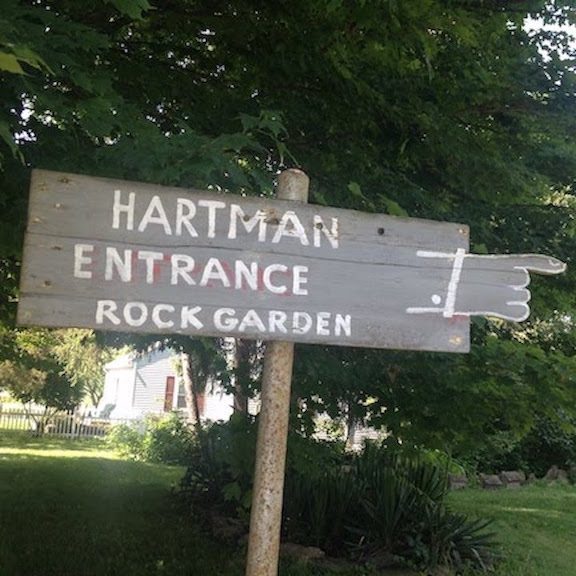
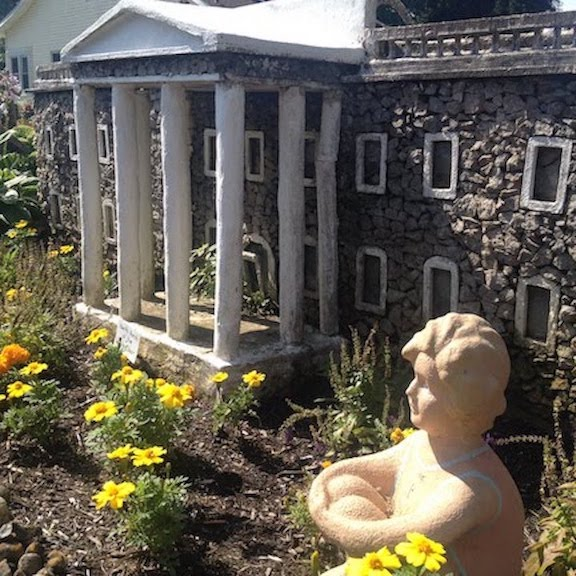
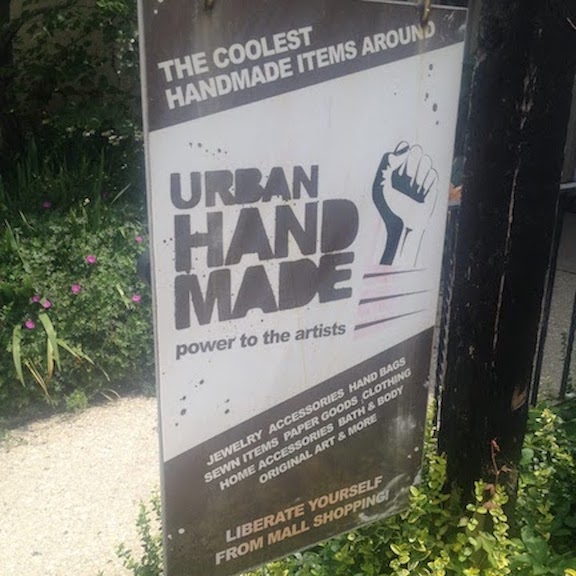
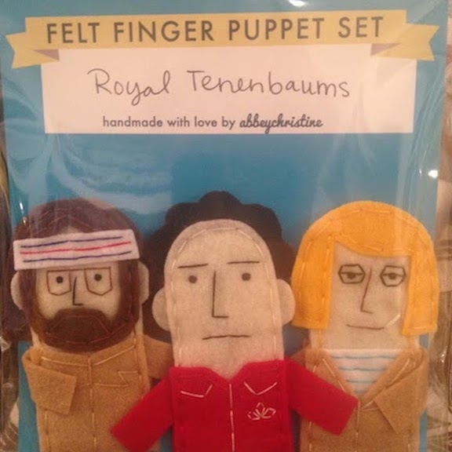
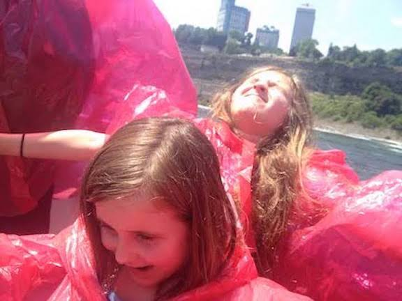

From St. Louis, MO to Springfield, OH
This mural is a tribute to Gustave (Gus) Ferdinand Sun, who rose to fame as the premier small town vaudeville king in the early 1900s. It's painted on the Regent Theater, which was opened in 1920. Mr. Ferdinand and the theater both have an interesting history.

"The Hartman Rock Garden is one of the nation’s most intriguing and revered works of in situ folk art, an outsider art phenomena where self-taught artists construct fascinating worlds out of concrete, metal, stone, and whatever else they can find." - Hartman Rock Garden


"Located in beautiful Downtown Yellow Springs, Ohio, Urban Handmade is a one-of-a-kind shopping experience that helps reconnect with our communities and each other." - Urban Handmade

Seriously, how can anyone pass up a handmade felt Royal Tenenbaums Finger Puppet set?

We LOVED the Hornblower boat ride! Being so close to Niagra Falls made all the miles worth it.

...and, yeah, I wore a fanny pack the whole time.